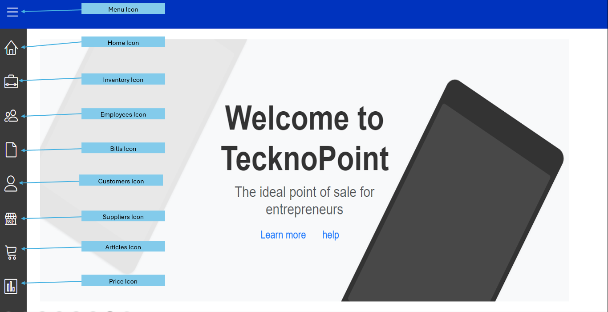
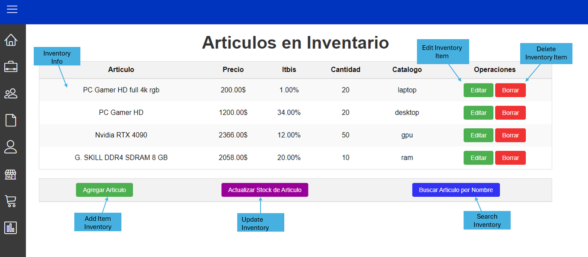
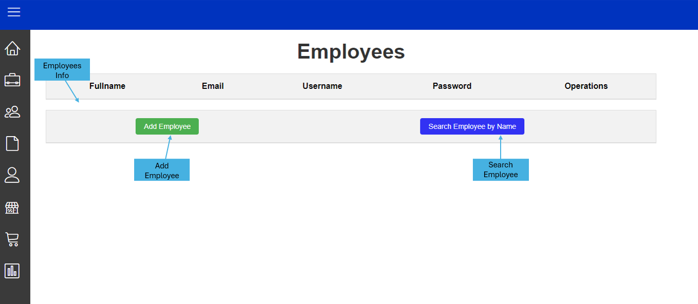
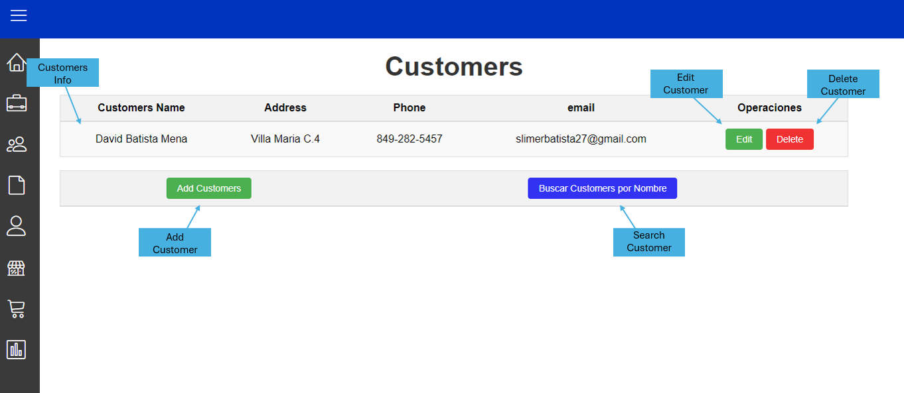
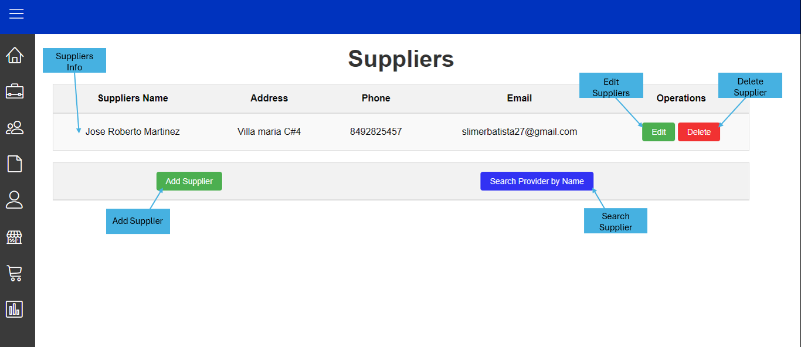
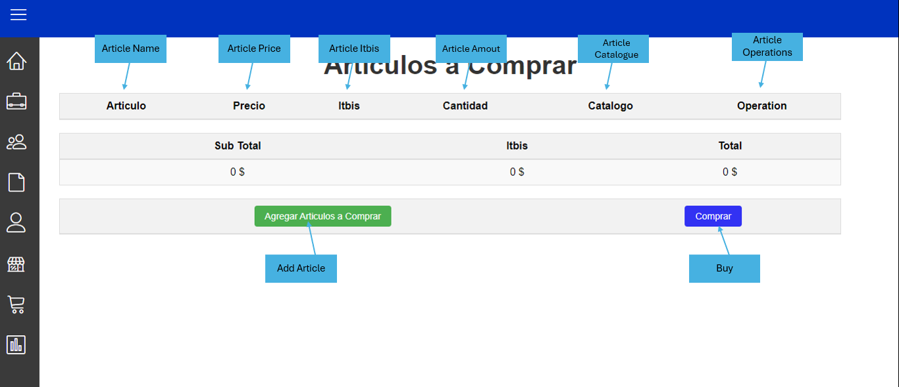

Bienvenido a nuestra página de ayuda. Aquí encontrarás información útil para resolver tus dudas.
Este es el inicio y consta de un menu el cual se encuentra en el lateral derecho de la pagina y contiene multiples Botones los cuales se explican en la imagen de arriba.
Este es el apartado de inventario aqui puedes encontrar una tabla en la que se muestra la informacion de los productos que tengas en inventario hay un apartado que son la operaciones que puedes realizar las cuales son eliminar y editar los productos mas a bajo hay dos botones mas uno para agregar productos en el inventario y otro para buscar productos por su nombre
Este es el apartado de Empleados aqui encontraras una tabla con todos los empleados registrados, como tambien tiene una operaciones para eliminar y editar empleados solo debes dar clic sobre ellos mas abajo hay dos botones uno para agregar usuarios y otro para buscar empleados por nombre.
Este es el apartado de los clientes aqui podras ver toda la informacion de los clientes que tenemos registrados en nuestro sistema, en esta pantalla tambien encuentran operaciones para eliminar y editar los clientes y mas abajo hay dos botones para buscar y agregar clientes a nuestro registro.
Este es el apartado de los proveedores aqui podras ver toda la informacion de los proveedores que tenemos registrados en nuestro sistema, en esta pantalla tambien encuentran operaciones para eliminar y editar los proveedores y mas abajo hay dos botones para buscar y agregar proveedores a nuestro registro.
Por ultimo el apartado de articulos este apartado espara el uso de los empleados que vallan a facturar pueden añadir articulos que el cliente va a comprar con el boton de abajo tambien pueden pueden agregar o quitar articulos añadidos mas no pueden eliminarlos hay un botom comprar que se encarga de realizar la factura para el cliente y guardarlo en un registro este apartado tambien cuenta con un total, subtotal y Itbis que realiza los calculos necesarios para el itbis y el precio de los productos.